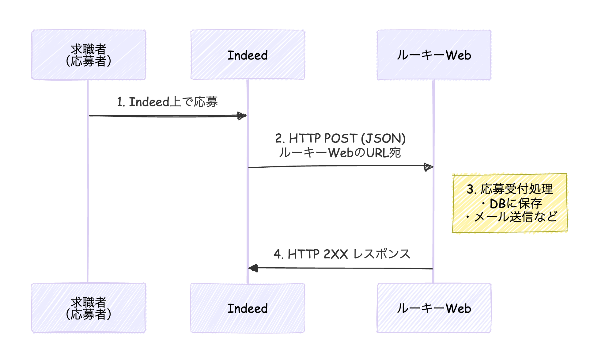

IndeedエントリとのATS連携について
概要
ATS連携とは
Indeed Applyは、求人応募システム（ATS: Applicant Tracking System）と連携することで、求人情報の掲載や応募者データの管理を効率化する機能です[1]。
連携の仕組み
求人情報の同期: ATSからIndeedへ自動的に求人情報を配信
応募者データの同期: Indeed経由の応募者情報をATSへ自動転送
応募者ステータスの同期: Disposition Sync APIを使用して、応募者のステータス情報をIndeedに送信可能[5]
Indeed Apply連携 - Laravel 7での受信処理の流れ

実装のステップ
Step 1: ルートの定義（CSRF除外が必要）
Indeedからのリクエストは外部からのPOSTなので、CSRF検証を除外する必要があります。
// routes/api.php に追加（CSRFミドルウェアが適用されない）
Route::post('/indeed-apply/webhook', 'Api\IndeedApplyController@receive')
->name('indeed.apply.webhook');
Step 2: コントローラーの作成
<?php
// app/Http/Controllers/Api/IndeedApplyController.php
namespace App\Http\Controllers\Api;
use App\Http\Controllers\Controller;
use Illuminate\Http\Request;
use Illuminate\Support\Facades\Log;
class IndeedApplyController extends Controller
{
/**
* Indeedからの応募データを受信
*/
public function receive(Request $request)
{
// 1. 署名の検証（セキュリティ）
if (!$this->verifySignature($request)) {
Log::warning('Indeed Apply: 署名検証失敗');
return response()->json(['error' => 'Invalid signature'], 401);
}
// 2. JSONデータを取得
$payload = $request->getContent();
$data = json_decode($payload, true);
if (json_last_error() !== JSON_ERROR_NONE) {
Log::error('Indeed Apply: JSONパースエラー');
return response()->json(['error' => 'Invalid JSON'], 400);
}
// 3. ログに記録（デバッグ用）
Log::info('Indeed Apply: 応募受信', ['job_id' => $data['job']['jobId'] ?? 'unknown']);
// 4. 応募データを保存
try {
$this->saveApplication($data);
} catch (\Exception $e) {
Log::error('Indeed Apply: 保存エラー', ['error' => $e->getMessage()]);
// ※ POSTの応答では検証エラーを返さないこと（Indeedの要件）
// 保存に失敗しても2XXを返し、後で処理する
}
// 5. 成功レスポンス（必ず2XXを返す）
return response()->json(['status' => 'received'], 200);
}
/**
* HMAC-SHA1署名を検証
*/
private function verifySignature(Request $request)
{
$signature = $request->header('X-Indeed-Signature');
$secret = config('services.indeed.api_secret'); // .envから取得
$payload = $request->getContent();
$expectedSignature = base64_encode(hash_hmac('sha1', $payload, $secret, true));
return hash_equals($expectedSignature, $signature);
}
/**
* 応募データをDBに保存
*/
private function saveApplication(array $data)
{
// applicationsテーブルなどに保存
// $data の構造例:
// - $data['applicant']['fullName'] : 氏名
// - $data['applicant']['email'] : メールアドレス
// - $data['applicant']['phoneNumber'] : 電話番号
// - $data['applicant']['resume']['file']['data'] : 履歴書(Base64)
// - $data['job']['jobId'] : 求人ID
// - $data['questions'] : スクリーナー質問の回答
// TODO: 実際の保存ロジックを実装
}
}
Step 3: 環境設定
// config/services.php に追加
'indeed' => [
'api_token' => env('INDEED_API_TOKEN'),
'api_secret' => env('INDEED_API_SECRET'),
],
# .env に追加
INDEED_API_TOKEN=your_api_token_here
INDEED_API_SECRET=your_api_secret_here
主要なポイント
ポイント | 説明 |
|---|
エンドポイントURL | https://your-domain.com/api/indeed-apply/webhook をIndeedに登録
|
HTTPS必須 | Indeed ApplyはHTTPSのみ対応 |
必ず2XXを返す | 応募データの内容に問題があっても、受信成功時は2XXを返す |
署名検証 | X-Indeed-Signatureヘッダーでリクエストの正当性を検証
|
リダイレクト禁止 | 301/302リダイレクトは使用不可 |
重複判定 | 同じ求人ID + 同じメール + 120日以内 = 重複 |
Indeed Apply 応募データ（JSON）の主要項目
全体構造
{
"applicant": { ... }, // 応募者情報
"job": { ... }, // 求人情報
"questions": [ ... ], // スクリーナー質問の回答
"applicationId": "...", // Indeed側の応募ID
"appliedOnMillis": 1234567890000 // 応募日時（ミリ秒）
}
1. 応募者情報（applicant）
項目 | キー | 説明 |
|---|
氏名 | fullName
| フルネーム |
メール | email
| メールアドレス |
電話番号 | phoneNumber
| 電話番号 |
住所 | location
| 住所・地域 |
履歴書 | resume
| 履歴書データ（下記参照） |
履歴書データ（resume.file）
{
"applicant": {
"fullName": "山田 太郎",
"email": "taro.yamada@example.com",
"phoneNumber": "090-1234-5678",
"location": "東京都渋谷区",
"resume": {
"file": {
"contentType": "application/pdf",
"fileName": "resume.pdf",
"data": "Base64エンコードされたファイルデータ..."
},
"text": "履歴書のテキスト版（パース済み）"
}
}
}
項目 | キー | 説明 |
|---|
ファイル形式 | contentType
| application/pdf, application/msword など
|
ファイル名 | fileName
| resume.pdf など
|
ファイル本体 | data
| Base64エンコードされた履歴書ファイル |
テキスト版 | text
| 履歴書の内容をテキスト化したもの |
対応ファイル形式: .txt, .pdf, .doc, .docx, .rtf
2. 求人情報（job）
{
"job": {
"jobId": "JOB-12345",
"jobTitle": "営業職",
"jobCompanyName": "株式会社サンプル",
"jobLocation": "東京都渋谷区",
"jobUrl": "https://www.example.com/jobs/12345"
}
}
項目 | キー | 説明 |
|---|
求人ID | jobId
| XMLフィードで設定したID（ルーキーWeb側の求人IDと紐付け） |
職種名 | jobTitle
| 求人タイトル |
会社名 | jobCompanyName
| 企業名 |
勤務地 | jobLocation
| 勤務地 |
求人URL | jobUrl
| 求人詳細ページのURL |
3. スクリーナー質問の回答（questions）
{
"questions": [
{
"id": "work_authorization",
"question": "日本での就労資格はありますか？",
"answer": "Yes"
},
{
"id": "years_experience",
"question": "業界経験年数を教えてください",
"answer": "5"
},
{
"id": "available_start_date",
"question": "入社可能日はいつですか？",
"answer": "2026-03-01"
},
{
"id": "skills",
"question": "お持ちのスキルを選択してください",
"answer": ["Excel", "PowerPoint", "営業経験"]
}
]
}
項目 | キー | 説明 |
|---|
質問ID | id
| 質問の識別子（JSON設定時に指定したもの） |
質問文 | question
| 質問の内容 |
回答 | answer
| 応募者の回答（文字列または配列） |
4. その他のメタ情報
{
"applicationId": "abc123def456",
"appliedOnMillis": 1707465600000,
"locale": "ja_JP",
"schemaVersion": "1.2"
}
項目 | キー | 説明 |
|---|
応募ID | applicationId
| Indeed側で発行される一意のID |
応募日時 | appliedOnMillis
| UNIX時間（ミリ秒） |
ロケール | locale
| 言語・地域（ja_JPなど） |
スキーマVer | schemaVersion
| データ形式のバージョン |
完全なJSONサンプル
{
"applicationId": "abc123def456ghi789",
"appliedOnMillis": 1707465600000,
"locale": "ja_JP",
"schemaVersion": "1.2",
"applicant": {
"fullName": "山田 太郎",
"email": "taro.yamada@example.com",
"phoneNumber": "090-1234-5678",
"location": "東京都渋谷区",
"resume": {
"file": {
"contentType": "application/pdf",
"fileName": "yamada_resume.pdf",
"data": "JVBERi0xLjQKJeLjz9MKMyAwIG9..."
},
"text": "【職務経歴】\n株式会社○○ 営業部..."
}
},
"job": {
"jobId": "rookie-job-12345",
"jobTitle": "法人営業",
"jobCompanyName": "株式会社サンプル",
"jobLocation": "東京都渋谷区",
"jobUrl": "https://rookie-web.example.com/jobs/12345"
},
"questions": [
{
"id": "work_authorization",
"question": "日本での就労資格はありますか？",
"answer": "Yes"
},
{
"id": "years_experience",
"question": "営業経験年数",
"answer": "3"
}
]
}
注意点
ポイント | 説明 |
|---|
すべての項目が必ず存在するわけではない | 欠落しているフィールドは空として扱う |
認識できないフィールドは無視する | 将来的に新しいフィールドが追加される可能性あり |
履歴書はBase64デコードが必要 | $data['applicant']['resume']['file']['data'] をデコードしてファイル保存
|
jobIdでルーキーWebの求人と紐付け | XMLフィードで設定したIDがそのまま送られてくる |
20 8月 2026